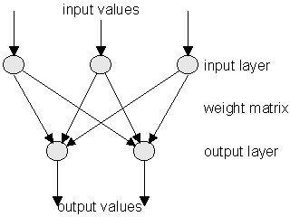
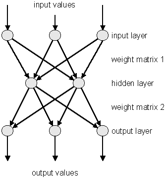
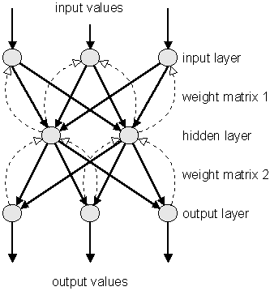
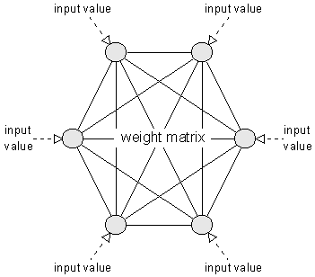

What are neural nets?
What are neural nets? bottom of page
bottom of page
| What are neural nets? |
bottom of page |
The learning process |
| jump directly to |
In this section, a selection of neural nets will be described.
| Perceptron characteristics | |
| sample structure |
 |
| type | feedforward |
| neuron layers |
1 input layer
1 output layer |
| input value types | binary |
| activation function | hard limiter |
| learning method | supervised |
| learning algorithm | Hebb learning rule |
| mainly used in |
simple logical operations
pattern classification |
 top of page top of page |
| Multi-Layer-Perceptron characteristics | |
| sample structure |
 |
| type | feedforward |
| neuron layers |
1 input layer
1 or more hidden layers 1 output layer |
| input value types | binary |
| activation function | hard limiter / sigmoid |
| learning method | supervised |
| learning algorithm |
delta learning rule
backpropagation (mostly used) |
| mainly used in |
complex logical operations
pattern classification |
| top of page |
| Backpropagation Net characteristics | |
| sample structure |
 |
| type | feedforward |
| neuron layers |
1 input layer
1 or more hidden layers 1 output layer |
| input value types | binary |
| activation function | sigmoid |
| learning method | supervised |
| learning algorithm | backpropagation |
| mainly used in |
complex logical operations
pattern classification speech analysis |
| top of page |
| Hopfield Net characteristics | |
| sample structure |
 |
| type | feedback |
| neuron layers | 1 matrix |
| input value types | binary |
| activation function | signum / hard limiter |
| learning method | unsupervised |
| learning algorithm |
delta learning rule
simulated annealing (mostly used) |
| mainly used in |
pattern association
optimization problems |
| top of page |
| Kohonen Feature Map characteristics | |
| sample structure |

|
| type | feedforward / feedback |
| neuron layers |
1 input layer
1 map layer |
| input value types | binary, real |
| activation function | sigmoid |
| learning method | unsupervised |
| learning algorithm | selforganization |
| mainly used in |
pattern classification
optimization problems simulation |
| What are neural nets? |
top of page |
The learning process |
| navigation |
|
[main page]
[content]
[neural net overview] [class structure] [using the classes] [sample applet] [glossary] [literature] [about the author] [what do you think ?] |
 Perceptron
Perceptron